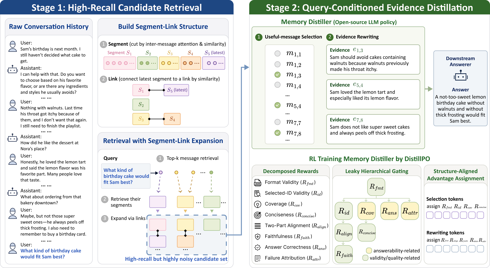
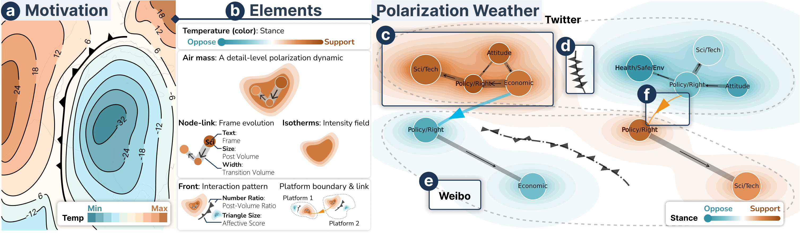
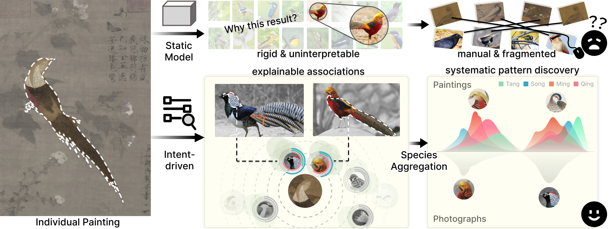
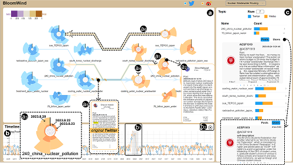

Hi! I am Jianing Yin (殷佳宁 in Chinese), a fourth-year Ph.D. candidate at the State Key Lab of CAD&CG, Zhejiang University. As a member of ZJUIDG, I am fortunate to be supervised by Prof. Yingcai Wu and Dr. Tan Tang.
My current research focuses on long-term memory for LLM agents, particularly how agents can efficiently retrieve, reason over, and learn from accumulated information and experience. In my recent work, DeferMem, I developed a reinforcement-learning-based approach to query-time evidence distillation for more effective memory utilization. More broadly, I am interested in developing memory algorithms and agent harness architectures that support long-horizon reasoning and continual improvement.
My earlier research combined computational modeling and visual analytics to study complex information dynamics on social media. I proposed computational methods and interactive systems for analyzing cross-platform information propagation and multi-platform polarization dynamics.
🔬 Research Interests
Long-Term Agent Memory. How can LLM agents retain, retrieve, and utilize information and experiences accumulated over long horizons?
Memory-Augmented Agent Reasoning. How can agent harness architectures and memory-aware reasoning strategies help LLM agents solve complex tasks more effectively and efficiently?
Self-Improvement and Continual Learning. How can agents leverage accumulated experience and feedback to continually improve their memory, reasoning, and problem-solving capabilities?
🔥 News
- 2026.09: An updated version of our preprint DeferMem is now available on arXiv.
- 2026.08: 🎉🎉 Our papers “PolarWeather: Visual Analysis of Multi-Platform Polarization Dynamics on Social Media” and “PaintEcho: Bringing Paintings to Photos through Cross-domain Visual Exploration” are accepted to IEEE VIS 2026.
- 2024.07: 🎉🎉 Our paper “Blowing Seeds across Gardens: Visualizing Implicit Propagation of Cross-Platform Social Media Posts” is accepted to IEEE VIS 2024.
📝 Publications

DeferMem: Query-Time Evidence Distillation via Reinforcement Learning for Long-Term Agent Memory
Jianing Yin, Tan Tang, Yingcai Wu
ArXiv preprint, 2026

PolarWeather: Visual Analysis of Multi-Platform Polarization Dynamics on Social Media
Jianing Yin, Tan Tang, Haobo Zheng, Buwei Zhou, Lu Ying, Songela Nurdawuliet, Yuan Tian, Tai-Quan Peng, Dazhen Deng, and Yingcai Wu
IEEE Transactions on Visualization and Computer Graphics (VIS’26)

PaintEcho: Bringing Paintings to Photos through Cross-domain Visual Exploration
Yihan Gao, Tan Tang, Jianing Yin, Haobo Zheng, Tianyi Chen, Lu Ying, Yanhong Wu, and Yingcai Wu
IEEE Transactions on Visualization and Computer Graphics (VIS’26)

Blowing Seeds across Gardens: Visualizing Implicit Propagation of Cross-Platform Social Media Posts
Jianing Yin, Hanze Jia, Buwei Zhou, Tan Tang, Lu Ying, Shuainan Ye, Tai-Quan Peng, and Yingcai Wu
IEEE Transactions on Visualization and Computer Graphics (VIS’24)
📖 Education
- 2023.09 - now, PhD, College of Computer Science and Technology, Zhejiang University, Hangzhou, China.
- 2019.09 - 2023.06, Undergraduate, Turing Class, College of Computer Science and Technology, Zhejiang University, Hangzhou, China.
🧑🏫 Experience
- 2025.04 - 2025.06, Teaching Assistant, Undergraduate Course at Zhejiang University: Introduction to Data Visualization.
- 2024.11 - 2025.01, Teaching Assistant, Undergraduate Course at Zhejiang University: Introduction to Data Visualization.
- 2024.07 - 2024.07, Teaching Assistant, Undergraduate Course at Zhejiang University: International Summer School on Visual Analytics.
- 2024.02 - 2024.06, Teaching Assistant, Undergraduate Course at Zhejiang University: The Intellectual History of Computer Science.
- 2022.07 - 2022.09, Summer Intern, Technology Department of Morgan Stanley.